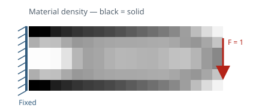

構造最適化 / Structural optimization
2次元SIMPトポロジー最適化
2-D SIMP Topology Optimization
片持ち梁のコンプライアンス最小化 / Cantilever compliance minimization
Provenance note. This is a clean-room reproduction created after a Drive recovery audit. Original user-authored topology source was not recovered.

108 elements18 × 6 benchmark mesh
0.39999Final volume fraction
−68.73%Compliance change
64 iterationsConverged; Δρ = 0.00952
Q4 FEMPlane-stress finite elements
SIMPPenalized material interpolation
OC updateVolume-constrained optimization
NumPyOne runtime dependency